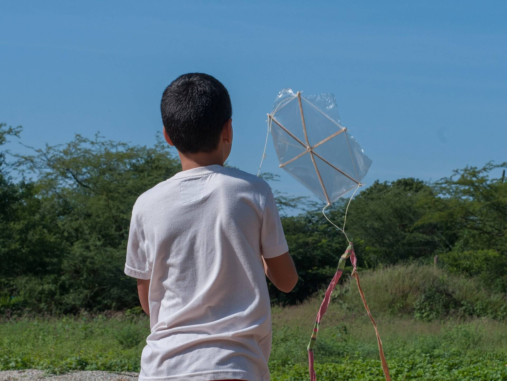

一个回合,四个环节。
从第一页到最后一页,孩子看到的是这些。
-
一页显示句子"一只蜜蜂坐在红帽子上。",其中"坐"字亮起。 读一页
一次只出一句短句,正在读的词会亮起来。
-
一张词卡,显示"山丘",并配有发音按钮。 听一个词
被一个词难住了?点一下,Sprout 会大声读出来。
-
花园界面:读完一页后,豌豆正在生长。 种一棵植物
每读完一页,今天的植物就往前长一点。
-
回合的结尾:"五分钟到了。明天见。" 五分钟就停
五分钟一到,回合自动结束,谁也不会累着。
看花园一点点长满。
植物在回合之间会留在原地,所以总有再回来的理由。
你的花园
第一个回合之后
- 豌豆刚种下.
明天的种子:向日葵
你的花园
一周之后
- 豌豆开花中oll().
- 向日葵生长中Tll(.
- 番茄生长中Tll(.
- 雏菊生长中Tll(.
- 胡萝卜发芽中vl.
- 菜豆发芽中vl.
- 萝卜刚种下.
明天的种子:生菜
你的花园
两周之后
- 豌豆开花中oll().
- 向日葵开花中*ll().
- 番茄开花中oll().
- 雏菊开花中*ll().
- 胡萝卜生长中Tll(.
- 菜豆生长中Tll(.
- 萝卜生长中Tll(.
- 生菜生长中Tll(.
- 虞美人生长中Tll(.
- 南瓜发芽中vl.
- 洋葱发芽中vl.
- 韭葱发芽中vl.
- 万寿菊刚种下.
- 草莓刚种下.
明天的种子:香豌豆

五分钟一到,就去玩。
- 适合 5 到 8 岁
- 专为刚开始识字的孩子设计。
- 每天一次
- 一个回合,上学日的晚上也安排得开。
- 免费 14 天
- 之后每月 £4。
开始第一个回合。
免费 14 天,之后 每月 £4。